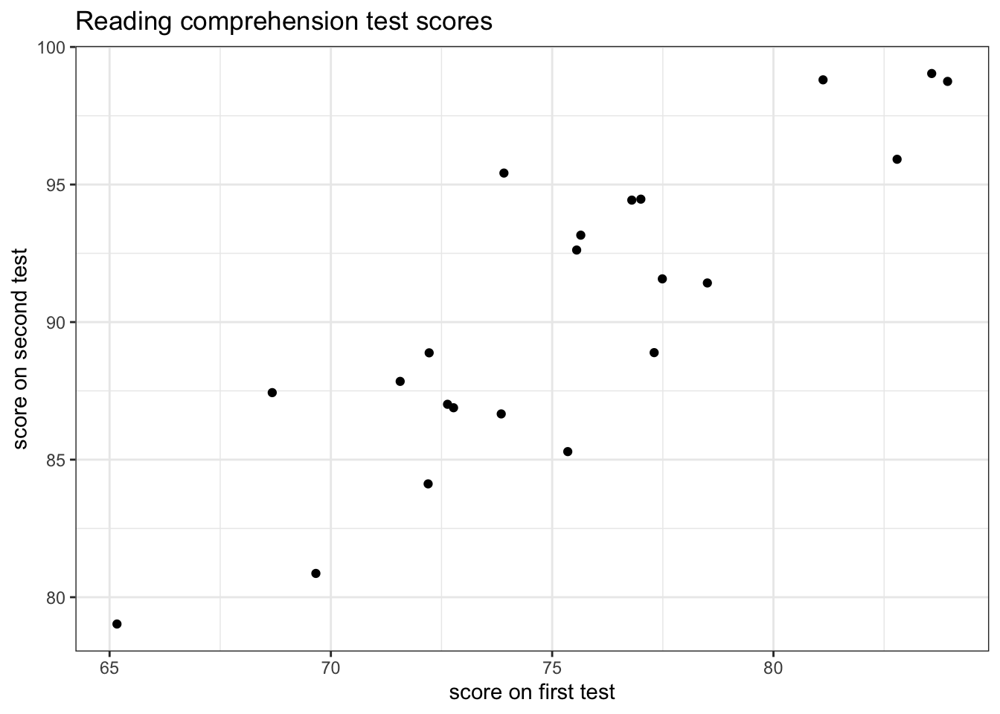

Multivariate normal
The multivariate normal (MVN)
Motivating examples
Example 1: Twenty two students take a reading comprehension test before and after receiving an instructional method. The result for each student is a bivariate vector \(Y_i\) that includes a pre- and post- instructional score.

Example 2: We measure three features of Gentoo penguins: bill length, bill depth and body mass. For each penguin we record \(Y_i\), a three-dimensional vector of trait measurements.
Density
We say a \(p\) dimensional vector \(\boldsymbol{Y}\) has a multivariate normal distribution if its sampling density is given by
\[ p(\boldsymbol{y}| \boldsymbol{\theta}, \Sigma) = (2\pi)^{-p/2} |\Sigma|^{-1/2} \exp\{ -\frac{1}{2}(\boldsymbol{y}-\boldsymbol{\theta})^T \Sigma^{-1} (\boldsymbol{y}- \boldsymbol{\theta}) \} \]
where
\[ \boldsymbol{y}= \left[ {\begin{array}{cc} y_1 \\ y_2\\ \vdots\\ y_p \end{array} } \right] ~~~ \boldsymbol{\theta}= \left[ {\begin{array}{cc} \theta_1 \\ \theta_2\\ \vdots\\ \theta_p \end{array} } \right] ~~~ \Sigma = \left[ {\begin{array}{cc} \sigma_1^2 & \sigma_{12}& \ldots & \sigma_{1p}\\ \sigma_{12} & \sigma_2^2 &\ldots & \sigma_{2p}\\ \vdots & \vdots & & \vdots\\ \sigma_{1p} & \ldots & \ldots & \sigma_p^2 \end{array} } \right]. \]
Key facts
- \(\boldsymbol{y}\in \mathbb{R}^p\) ; \(\boldsymbol{\theta}\in \mathbb{R}^p\); \(\Sigma > 0\)
- \(E[\boldsymbol{y}] = \boldsymbol{\theta}\)
- \(V[\boldsymbol{y}] = E[(\boldsymbol{y}- \boldsymbol{\theta})(\boldsymbol{y}- \boldsymbol{\theta})^T] = \Sigma\)
- Marginally, \(y_i \sim N(\theta_i, \sigma_i^2)\).
- If \(\boldsymbol{\theta}\) is a MVN random vector, then the kernel is \(\exp\{-\frac{1}{2} \boldsymbol{\theta}^T A \boldsymbol{\theta}+ \boldsymbol{\theta}^T \boldsymbol{b} \}\). The mean is \(A^{-1}\boldsymbol{b}\) and the covariance is \(A^{-1}\).
sampling from a mvt norm
library(mvtnorm) contains functions we need.
rmvnorm()to sample from a multivariate normaldmvnorm()to compute the densitypmvnorm()to compute the distribution functionqmvnorm()to compute quantiles of the multivariate normal
Matrix algebra fundamentals
matrix facts
- matrix multiplication proceeds row \(\times\) column, so if we have the product \(AB\), \(A\) must have the same number of ___ as B has ___.
- the determinant of a matrix, \(|A|\), measures the size of the matrix
- the identity matrix is the matrix multiplicative identity. It is represented by \(\boldsymbol{I}\), in general \(\boldsymbol{I}_p\) is a \(p \times p\) matrix with 1 on each diagonal and 0 on every off-diagonal. \(\boldsymbol{I}A = A \boldsymbol{I}= A\).
- the inverse of a matrix \(A^{-1}\) works as follows: \(A A^{-1} = A^{-1}A = \boldsymbol{I}\).
- the trace of a matrix, tr(A), is the sum of its diagonal elements
- order matters: \(AB \neq BA\) in general.
- \(\Sigma > 0\) is shorthand for saying the matrix is positive definite. This means that for all vectors \(\boldsymbol{x}\), the quadratic form \(\boldsymbol{x}^T \Sigma \boldsymbol{x} > 0\). \(Sigma > 0 \iff\) all eigenvalues of \(\Sigma\) are positive.
Exercise:
- \(\boldsymbol{\theta}\) and \(\boldsymbol{b}\) are \(p \times 1\) vectors, \(A\) is a symmetric matrix. Simplify \(\boldsymbol{b}^T A \boldsymbol{\theta}+ \boldsymbol{\theta}^T A \boldsymbol{b}\) what is the dimension of the result?
- what’s the dimension of \(V[\boldsymbol{y}]\)?
matrix operations in R
# make a matrix A
A = matrix(c(1,.2, .2, 2), ncol = 2)
A [,1] [,2]
[1,] 1.0 0.2
[2,] 0.2 2.0# invert A (expensive for large matrices)
Ainv = solve(A)
# matrix multiplication
Ainv %*% A [,1] [,2]
[1,] 1 0
[2,] 0 1# determinant of A
det(A)[1] 1.96# trace of A
sum(diag(A))[1] 3# create a vector b
b = matrix(c(1, 2), ncol = 1)
b [,1]
[1,] 1
[2,] 2# transpose the vector b
t(b) [,1] [,2]
[1,] 1 2b %*% AError in b %*% A: non-conformable arguments- What went wrong in the code above?
Semiconjugate priors
semiconjugate prior for \(\boldsymbol{\theta}\)
If
\[ \begin{aligned} \boldsymbol{y}| \boldsymbol{\theta}, \Sigma &\sim MVN(\boldsymbol{\theta}, \Sigma),\\ \boldsymbol{\theta}&\sim MVN(\mu_0, \Lambda_0), \end{aligned} \]
then
\[ \boldsymbol{\theta}| \boldsymbol{y}, \Sigma \sim MVN(\boldsymbol{\mu_n}, \Lambda_n), \]
where
\[ \begin{aligned} \Lambda_n &= (\Lambda_0^{-1} + n \Sigma^{-1} )^{-1},\\ \boldsymbol{\mu_n} &= (\Lambda_0^{-1} + n \Sigma^{-1} )^{-1}(\Lambda_0^{-1} \boldsymbol{\mu}_0 + n \Sigma^{-1} \bar{\boldsymbol{y}}). \end{aligned} \]
Exercise: interpret \(E[\boldsymbol{\theta}| \boldsymbol{y}_1, \ldots \boldsymbol{y}_n, \Sigma]\) and \(Cov[\boldsymbol{\theta}| \boldsymbol{y}_1, \ldots \boldsymbol{y}_n, \Sigma]\).
semiconjugate prior for \(\Sigma\)
If
\[ \begin{aligned} \boldsymbol{y}| \boldsymbol{\theta}, \Sigma &\sim MVN(\boldsymbol{\theta}, \Sigma),\\ \Sigma &\sim \text{inverse-Wishart}(\nu_0, S_0^{-1}), \end{aligned} \]
then
\[ \Sigma | \boldsymbol{y}, \boldsymbol{\theta}\sim \text{inverse-Wishart} (\nu_0 + n, (S_0 + S_{\theta})^{-1}), \]
where \(S_\theta = \sum_{i=1}^n (\boldsymbol{y}_i - \boldsymbol{\theta})(\boldsymbol{y}_i - \boldsymbol{\theta})^T\) is the residual sum of squares matrix for the vectors \(\boldsymbol{y}_1, \ldots \boldsymbol{y}_n\) if the population mean is \(\boldsymbol{\theta}\).
the inverse-Wishart
the inverse-Wishart\((\nu_0, S_0^{-1})\) density is given by
\[ \begin{aligned} p(\Sigma | \nu_0, S_0^{-1}) = \left[ 2^{\nu_0 p / 2} \pi^{{p \choose 2}/2} |S_0|^{-\nu_0/2} \prod_{j = 1}^p \Gamma([\nu_0 + 1 - j]/2) \right]^{-1} \times\\ |\Sigma|^{-(\nu_0 + p + 1)/2} \times \exp \{ -\frac{1}{2}tr(S_0 \Sigma^{-1})\}. \end{aligned} \]
Key facts
- notice that the first line is the normalizing constant of the density
- the support is \(\Sigma > 0\) and \(\Sigma\) symmetric \(p \times p\) matrix. \(\nu_0 \in \mathbb{N}^+\) and \(\nu_0 \geq p\). \(S_0\) is a \(p \times p\) symmetric positive definite matrix.
- if \(\Sigma\) is inv-Wishart\((\nu_0, S_0^{-1})\) then \(\Sigma^{-1}\) is Wishart\((\nu_0, S_0^{-1})\).
- \(E[\Sigma^{-1}] = \nu_0 S_0^{-1}\) and \(E[\Sigma] = \frac{1}{\nu_0 - p - 1} S_0\).
- intuition: \(\nu_0\) is prior sample size. \(S_0\) is a prior guess of the covariance matrix.
sampling from the inverse-Wishart
- pick \(\nu_0 > p\), pick \(S_0\)
- sample \(\boldsymbol{z}_1, \ldots \boldsymbol{z}_{\nu_0} \sim \text{ i.i.d. } MVN(\boldsymbol{0}, S_0^{-1})\)
- calculate \(\boldsymbol{Z}^T \boldsymbol{Z} = \sum_{i = 1}^{\nu_0} \boldsymbol{z}_i \boldsymbol{z}^T\)
- set \(\Sigma = (\boldsymbol{Z}^T \boldsymbol{Z})^{-1}\)
library(mvtnorm) # contains function rmvnorm
# 2x2 example: generating 1 sample from an inv-Wishart
set.seed(360)
p = 2
nu0 = 3
S0 = matrix(c(1, .1, .1, 1), ncol = 2)
S0inv = solve(S0)
Z = rmvnorm(n = nu0, # number of observations of the 2D vector Z
mean = rep(0, p), # mean 0
sigma = S0inv) # prior variance
Sigma = solve(t(Z) %*% Z)
eigen(Sigma)$values[1] 0.7821737 0.4174527Sigma [,1] [,2]
[1,] 0.5271834 -0.167273
[2,] -0.1672730 0.672443Exercise/show offline: why does this work? Hint: what is \(cov[\boldsymbol{z}]\)?
We can also use the monomvn package to simulate from a Wishart more succinctly,
library(monomvn)
set.seed(360)
Sigma = solve(rwish(nu0, S0inv))
eigen(Sigma)$values[1] 0.692529 0.160428Sigma [,1] [,2]
[1,] 0.1899212 0.1217519
[2,] 0.1217519 0.6630358